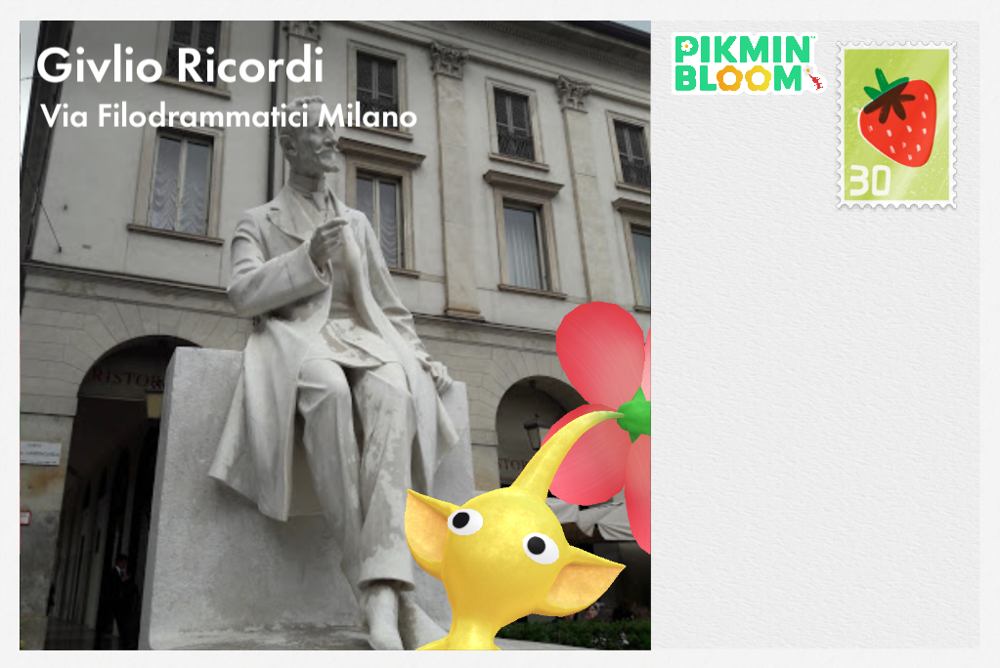

切換 Swiper 效果：
Fade（淡入淡出）
Slide（滑入）
Coverflow（3D）
Cube（立方體）
Flip（翻牌）
Cards（卡片）
✨ Expo 風格（視差+縮放）
✨ 卡片堆疊自訂
✨ Material You 風格（疊層+圓角）
Swiper 免費 MIT
✨ 自訂 creative effect
日本 · 京都清水寺
日本
韓國 · 首爾景福宮
韓國
法國 · 巴黎鐵塔
法國

義大利 · 羅馬競技場
義大利
美國 · 大峽谷
美國
目前效果：
Fade（淡入淡出）
— Swiper v11 MIT License — 支援觸控拖曳